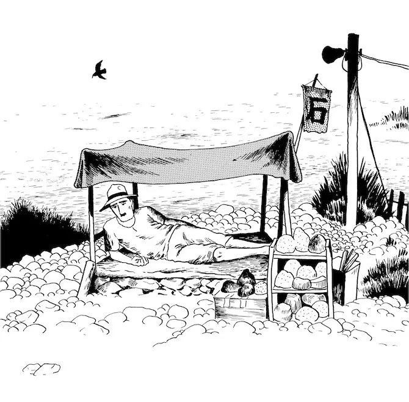

Link delle sezioni principali:
Raccolta di schemi su vari argomenti, principalmente informatici.
Raccolta di articoli e pensieri personali.
Raccolta di progetti personali, principalmente software.

Questo sito raccoglie buona parte dei miei appunti e dei miei progetti prodotti nell'arco di diversi anni, sia universitari che non. Molto tempo è stato speso per la realizzazione di tutti questi materiali, indipendentemente dalla loro utilità. In questo senso, questo sito rappresenta una piccola parte della mia vita. Chiunque tu sia, puoi decidere di rimanere quanto vuoi, ma sappi che difficilmente troverai qualcosa di utile per te. Ma poiché questo sito è una piccola testimonianza di spreco di tempo, non verrai giudicato.